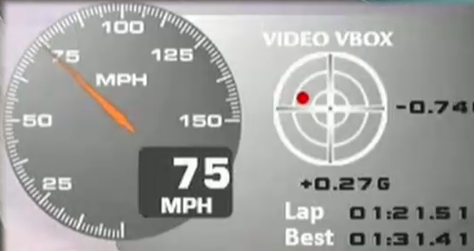
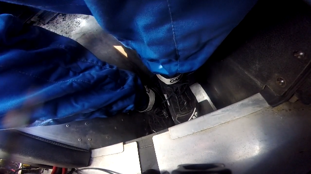
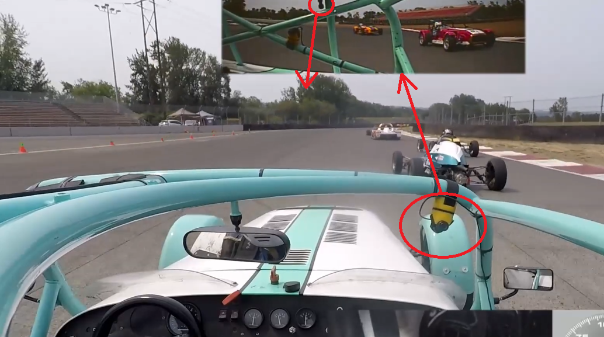

You don't need too much to start videoing your driving, but it's still slightly more than you might think. Here's a bare-bones list, and I'll go over options afterwards:
What is a GoPro? The name of a very common "sports" camera. Why is it called GoPro? No idea. They are small, lightweight, give excellent video quality, wide field of view, are relatively rugged, and have a lot of accessories available. Any similar brand of camera will work fine as well.
What does 1080P mean? 1080 pixels vertically per frame. Don't worry about what the "P" means! This means a 1920x1080 pixel image, and is pretty much the required minimum, but also the practical maximum, of what you want your video to be in. A smaller image means you can't see the details you might want such as trackside markings, signs, debris, car numbers, etc. A larger image just means the files get bigger and harder to edit, and most people don't have TVs or monitors to show that extra detail anyway.
What does 60fps mean? 60 frames per minute. This is how smoothly/jerkily the image flows. For some video you can get away with lower frame rates such as 30 or 24 frames per second, but for fast-moving things such as racing or track driving, you really need 60 frames per second. You can video at higher frame rates such as 90, 120 or 144 frames per second, but most TVs and monitors cannot display this data, and all you're doing is making inconveniently bigger video files.
Why use a case? Cameras on race cars get beaten up. There is lot of debris flying around - mainly bits of rubber and bugs, but sometimes bits of broken cars! It hits the camera hard, takes chunks out, and scratches up the lens causing that "soft focus" look to the video. I find I need to buy a new case every season to keep the quality good. It is obviously better to buy a new $20 case every year than a brand new camera. I like to use the "waterproof" cases, but be careful - the track stress means they quickly become not waterproof because of cracks and the seals getting cooked. They're still good enough to fend off a bit of rain while driving, but if you plan on actually going underwater with your camera (e.g. scuba diving), make sure you buy two cases, and clearly label them "track" and "water". Otherwise (like me) you will drown your poor camera.
Why a GoPro4?I say a GoPro4 is the minimum required, because it was the first model to do good 1080P 60fps video and have a screen on the back so you can tell the video is framed properly. Newer GoPros are great too, but for the specific purposes of videoing racing cars, the extra features don't help much. They can do higher resolutions and frame rates, but that's not much help since most TVs and monitors can't, so you're just generating bigger files for no good reason. Some GoPros are waterproof - but I advise using a separate case anyway. Newer GoPros have features like image-stabilisation, but when bolted firmly to a race car this tends to do exactly the wrong thing, and can make some viewers ill - if your camera has it, make sure you turn it OFF. I advise getting a GoPro with a tiny video screen on the back because it helps to make sure the camera is pointing at the right thing when you hit record - the mounts can easily get knocked and need straightening.
I already have a telemetry system with video in the car. Then you may be good to go. I have one with two cameras, but it produces rather low-resolution video, so I point one backwards to give a rear view, and one at my hands+feet to record that, and use a GoPro as my main forward view. I also use the telemetry sound, which is a microphone in the passenger footwell - this is much much better than the GoPro sound.
What do I do about sound? The sound from the built-in GoPro mic is basically useless because it's up in the air stream and that's all you can hear at anything above 20mph. You can get an external microphone - the passenger footwell is a fantastic place to put it - you then have to run a wire up to the camera and drill a hole in the case and it's a bit fiddly, but people have made it work. Instead I plug the microphone into my telemetry system, and then sync the separate audio and video streams up in the video editor afterwards. Pro-tip - as you pull out of the pits, knock on your dash or your helmet - it's a simultaneous visual and audio cue (like a clapper board in films).
Why so many batteries?A GoPro4 running 1080P 60fps will record for about 70 minutes on a single battery. In theory that means for a race day with a 15-minute qual and 30-minute race, you only need a single battery. But in practice you will be waiting in the hot pits for 15 minutes before, and you will often forget to turn the camera off afterwards, and then you have a dead battery and you're trying to charge it between races. This just happens ALL THE TIME because life gets busy. The solution is to just buy lots of batteries, change the battery after every session no matter how long the session was, and stop worrying about whether there's enough charge left for one more.
What I do is this. At start of day, I put the camera on the car, but not turned on. As part of my getting-in-car routine, I turn the camera on, actually start recording, then put my head-sock on, and do all of the other getting-in-car routine. When I get out of the car at the end of the session, I turn the camera off, take it off the car, change the battery, and put the camera back on the car (and re-aim it if necessary). So that way there's no thinking or wondering if you have enough charge left - every session you have a fresh fully-charged battery, and if you do forget to turn the camera off after a session, that's fine - yes, you're recording more video than you need to, but in practice I have never run out of memory-card space - you run out of battery first! Most track days you can fit in at most 7 sessions, so I advise you buy 6 batteries as well as the one the camera came with. It's just not worth skimping on this - you don't need the hassle.
Do I need an external hard drive? They're a good idea. Laptop hard drives usually aren't very big, and having an external hard drive 1TB or larger means in practice "you don't care" - you always have enough space. It lets you dump all your data to the hard drive and wipe the camera memory card at the end of the day, without having to think about which files you do and don't want to keep. Just copy all the data, clean the card for the next day, and sort it all out once you get home. An external USB hard drive also means "transfer" to a desktop machine for video editing is simple - you just unplug it from the laptop and into the desktop.
I take it one step further. I never delete anything from the hard drive. When it starts to get full, I just buy a new one! I end up filling about 1TB per year in raw video and telemetry data, and a 2TB hard drive costs $60. So now I have a stack of three of them with almost every video and telemetry file I've ever taken at the track. $30 a year for never having to worry that you might have deleted a file - totally worth it!
Do I need a laptop? An alternative approach would be to have multiple memory cards for the camera, and rotate them. I find I use a maximum of about 40GB a day (usually when I accidentally leave the camera running after a session), so one 64GB card per day should be sufficient. This is also a totally valid way to do things, and means you don't need a laptop with you on trips - but a laptop has other uses (like showing the video to others, e.g. if there's an incident) so I tend to have one with me anyway.
Video editing software? DaVinci Resolve is a really full-featured video editing suite that I use. It has a completely free version (don't ask me why) that has more features than anyone but a professional film-maker needs. The learning curve is very steep, but it will do what you want, eventually. If you know and like another video editing package, that's great too. There are simpler editing packages, including one that comes with GoPro cameras, but I keep running into annoying limitations, such as no picture-in-picture, or being annoyingly difficult to add text the way you want. Mostly you don't need the clever features, but sometimes they come in handy.
Here is a very simple setup on my road car at a track day. This is just a GoPro4 in a standard waterproof case, with a mount around the roll bar just behind where the passenger's head would be. I have removed the door on the passenger side for better visuals, but kept the door on my side to give me an arm rest and a mirror. As you can see even this simple set up produces excellent results, although even with the protection of the windscreen the sound (just from the GoPro, no external microphone) is barely adequate.
Big improvement in viewing pleasure, especially for races where if you're winning, most of the action is people coming from behind trying to pass you.
To help your driving, it is very useful to have telemetry. If you only have video, you can see your line and how your hands are moving, but telemetry is the only way to tell how consistent you are on throttle and brake. Cheap telemetry apps running on mobile phones are getting better every day, and it's worth trying them first, though make very sure the phone is strapped down in the car. Race cars are a tough place, and it may be worth buying a cheap second-hand phone just for telemetry use - that way if something bad does happen, you won't be left without your main phone!
Another option is to buy a dedicated car telemetry system such as those from Racelogic (VBOX) or AiM. Many of these come with cameras, and the video quality can be just as good as a GoPro, with the advantage that they are plumbed into the car's power systems and automatically turn on when you start moving.
Both solutions should be able to record the data and play it back later in video form that you can mix into your videos to help people understand the speeds and G-forces involved, and to give lap timings.
Want to look like the pros? Have a camera just pointing at your feet. I use an older camera that has a crack through the lens - but fortunately the crack is at the edge, and I crop it out. I set it to a low resolution video because it's only a small view, and that means the batteries last all day. Then later I splice it in as a picture-in-picture. Here's what the raw video looks like:
As a happy side-effect that camera also records sound. So the foot-cam gives me sound from the driver footwell. The telemetry gives me sound from the passenger footwell. I mix them so that one goes to the left ear and one to the right ear, so now I have stereo! Or something that sounds a bit like it anyway.
Here's what it looks like cropped, rotated, and inserted into the main video. This is now my standard "race spec" video quality now - with inset rear view, telemetry data, and foot cam, and I'm pretty happy with it.
For extra bonus points, if you learn the advanced features of your video editing software, you can do fancy stuff:
This looks pretty cool, but the camera gets really beaten up by debris. I constantly had to re-straighten it, and later that day a rock hit it, cracked the lens, and that was the end of that camera. I did re-purpose the camera as my foot-cam though, so it wasn't a total waste.
The fancier cameras have motion-stabilisation feature which works great when the camera is strapped to someone's head, but works badly when bolted to a fast race car. It certainly doesn't make things look good, and can make some people rather motion-sick, so remember to turn it off, or you get this:
This has happened far too often. If you don't quite get the mount tight enough, a bit of debris hits the camera and then the rest of your race is 80% sky:
The obvious place to put a camera is as far back/forwards as you can to get stuff inside the car out of the view. The problem is this tends to remove any sense of speed, and also limits the field of view, especially when passing or being passed, which is the exciting stuff!
After much experimentation, I realised you want to do the opposite. You want to put the forward-facing camera as far back as possible (on the Caterham this is the rear of the cage or the rollbar), and the rear-facing camera as far forwards as possible (on the windscreen or front of the cage). This often means the two cameras can see each other! On this screenshot you can see circled in red, the yellow rear-view camera, and the bottom of the mount for the front-facing GoPro.
I don't have an example of doing the wrong thing on the Caterham, but here is one from rally driving. This clip starts inside the car, and then 30 seconds later there's a view just three feet further forward on the dash, and it's so much less interesting.
If you do it all correctly, you'll be able to focus on the driving without faffing too much with cameras, but still be able to relive the enjoyment later in the cold winter no-track months. Let me know if there's any other tips you have to do with audio/video and I'll add them here.